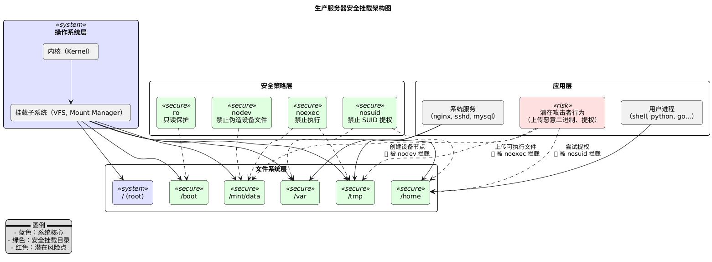

生产服务器安全挂载指南之 mount 选项
Posted on Sat 01 November 2025 in Journal
| Abstract | 生产服务器安全挂载指南之 mount 选项 |
|---|---|
| Authors | Walter Fan |
| Category | learning note |
| Status | v1.0 |
| Updated | 2025-11-01 |
| License | CC-BY-NC-ND 4.0 |
生产服务器安全挂载指南：用 mount 选项为系统加上最后一道防线
一、为什么要关心挂载安全？
大多数生产服务器会包含这些目录：
/
├── /home
├── /var
│ ├── /tmp
│ └── /log
└── /mnt
这些目录中，有一些是 高风险区域：
/tmp、/var/tmp：系统和应用都会在这里存放临时文件。攻击者常把恶意二进制或脚本放在这里执行。/home：开发、测试账号常有较高权限，容易成为跳板。/mnt、/media：外部挂载点，潜在的木马来源。
即便我们配置了严格的权限控制，一旦这些分区允许执行程序，攻击者就能通过“上传文件 + 执行”完成一次入侵。
所以核心目标是：防止非系统分区上执行任何代码。
二、核心安全挂载选项详解
Linux 的 mount 命令支持丰富的选项。安全相关的主要有三大件：
| 选项 | 作用 | 示例 |
|---|---|---|
noexec |
禁止执行二进制程序 | 防止运行恶意 ELF 文件 |
nosuid |
禁止 SUID/SGID 程序执行 | 防止提权攻击 |
nodev |
禁止解释设备文件 | 防止伪造设备节点攻击 |
1️⃣ noexec：禁止执行
禁止该文件系统中的任何可执行程序被内核直接运行。
mount -o remount,noexec /tmp
即使文件有执行权限（chmod +x），也无法运行。
但是可以通过解释器执行，例如：
bash /tmp/script.sh
2️⃣ nosuid：禁止提权
某些程序具有 SUID 位（执行时自动获得属主权限），常用于系统命令如 /usr/bin/passwd。
攻击者可能上传一个自定义 SUID 程序并执行，从而“提权”。
mount -o remount,nosuid /home
3️⃣ nodev：禁止伪造设备文件
Linux 中的设备节点（如 /dev/null）本质是特殊文件。
如果攻击者能在某个挂载点创建伪造的设备文件，可能间接访问系统设备。
mount -o remount,nodev /mnt/data
三、实战：生产环境安全挂载方案
下面是一份典型的 /etc/fstab 示例，针对不同目录使用了不同的安全策略。
# /etc/fstab 示例
# <device> <mountpoint> <type> <options> <dump> <pass>
UUID=xxxxxx / ext4 defaults,errors=remount-ro 0 1
UUID=yyyyyy /home ext4 defaults,nodev,nosuid 0 2
UUID=zzzzzz /tmp ext4 defaults,noexec,nosuid,nodev 0 2
UUID=aaaaaa /var ext4 defaults,nodev,nosuid 0 2
UUID=bbbbbb /var/tmp ext4 defaults,noexec,nosuid,nodev 0 2
UUID=cccccc /mnt/data ext4 defaults,noexec,nodev,nosuid 0 2
🔐 说明：
/tmp、/var/tmp禁止执行、禁止 suid、禁止设备文件；/home禁止设备文件与 SUID；/var通常存放日志、缓存，也不应执行代码；/mnt/data（外部数据盘）同样如此。
重新加载挂载：
sudo mount -a
验证：
findmnt -o TARGET,OPTIONS
四、进阶策略：只读与独立分区
除了上述三个选项，还有一些更激进的安全做法：
| 选项 | 说明 |
|---|---|
ro |
挂载为只读（Read Only） |
noatime |
不更新访问时间，减少写入压力 |
hidepid=2（/proc 挂载时） |
隐藏其他用户的进程信息 |
例如：
mount -o remount,ro /boot
可防止篡改内核或引导文件。
五、安全挂载策略总结表
| 目录 | 推荐选项 | 说明 |
|---|---|---|
/ |
defaults |
根目录保持默认 |
/boot |
ro,nodev,nosuid,noexec |
只读防篡改 |
/home |
nodev,nosuid |
用户目录不允许设备文件和 suid |
/tmp |
noexec,nosuid,nodev |
临时目录禁执行 |
/var/tmp |
同 /tmp |
临时文件目录 |
/var/log |
nodev,nosuid,noexec |
防止日志执行 |
/mnt, /media |
noexec,nosuid,nodev |
外部设备挂载点 |
/dev/shm |
noexec,nosuid,nodev |
共享内存区（防攻击） |
六、验证与排查
查看当前挂载状态：
mount | grep -E 'noexec|nosuid|nodev'
临时修改（测试）：
mount -o remount,noexec,nosuid,nodev /tmp
验证效果：
touch /tmp/test.sh
chmod +x /tmp/test.sh
/tmp/test.sh # => Permission denied
七、结语：安全从细节开始

@startuml
title 生产服务器安全挂载架构图
skinparam rectangle {
BackgroundColor<<secure>> #E0FFE0
BackgroundColor<<risk>> #FFE0E0
BackgroundColor<<system>> #E0E0FF
BorderColor black
Shadowing false
RoundCorner 10
}
skinparam packageStyle rectangle
skinparam defaultTextAlignment center
rectangle "操作系统层" <<system>> {
rectangle "内核（Kernel）" as kernel
rectangle "挂载子系统（VFS, Mount Manager）" as vfs
}
rectangle "文件系统层" {
rectangle "/ (root)" as root <<system>>
rectangle "/home" as home <<secure>>
rectangle "/var" as var <<secure>>
rectangle "/tmp" as tmp <<secure>>
rectangle "/mnt/data" as mnt <<secure>>
rectangle "/boot" as boot <<secure>>
}
rectangle "安全策略层" {
rectangle "noexec\n禁止执行" as noexec <<secure>>
rectangle "nosuid\n禁止 SUID 提权" as nosuid <<secure>>
rectangle "nodev\n禁止伪造设备文件" as nodev <<secure>>
rectangle "ro\n只读保护" as ro <<secure>>
}
rectangle "应用层" {
rectangle "系统服务\n（nginx, sshd, mysql）" as apps
rectangle "用户进程\n（shell, python, go...）" as userproc
rectangle "潜在攻击者行为\n（上传恶意二进制、提权）" as attacker <<risk>>
}
kernel -down-> vfs
vfs -down-> root
vfs -down-> home
vfs -down-> var
vfs -down-> tmp
vfs -down-> mnt
vfs -down-> boot
noexec -[dashed]-> tmp
noexec -[dashed]-> mnt
nosuid -[dashed]-> home
nosuid -[dashed]-> var
nodev -[dashed]-> mnt
ro -[dashed]-> boot
apps -down-> var
apps -down-> tmp
userproc -down-> home
attacker -[dashed]-> tmp : 上传可执行文件\n🚫 被 noexec 拦截
attacker -[dashed]-> home : 尝试提权\n🚫 被 nosuid 拦截
attacker -[dashed]-> mnt : 创建设备节点\n🚫 被 nodev 拦截
legend left
== 图例 ==
- 蓝色：系统核心
- 绿色：安全挂载目录
- 红色：潜在风险点
endlegend
@enduml
安全挂载听起来微不足道，但它往往是阻止攻击链中关键的一环。 一旦攻击者无法在系统中执行恶意文件，很多后续行为（提权、持久化、横向移动）都会被直接阻断。
别忘了：安全不止在网络边界，也藏在文件系统的挂载选项里。
🔍 推荐实践清单
✅ /tmp, /var/tmp, /dev/shm → noexec,nosuid,nodev
✅ /boot → ro,nodev,nosuid,noexec
✅ /home, /var → nodev,nosuid
✅ 定期审查 /etc/fstab
✅ 监控 mount 状态变化（可用 auditd 或 systemd unit 监控）
本作品采用知识共享署名-非商业性使用-禁止演绎 4.0 国际许可协议进行许可。